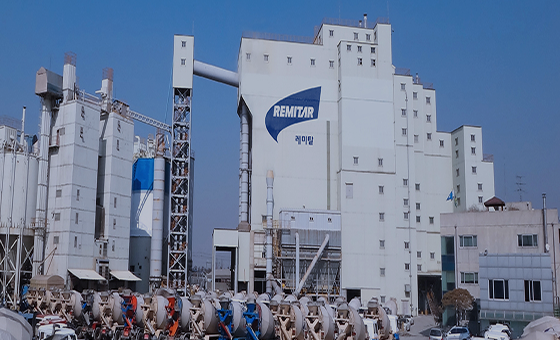

사업소개
사업소개
레미탈

레미탈(Remitar)은 시멘트·모래·특성개선제를 공장에서 정밀하게 배합해 만든 한일시멘트의 드라이 모르타르 브랜드입니다. 물만 더하면 바로 시공할 수 있어 균일한 품질과 편리한 시공성을 확보합니다.
용도별로 세분화된
60여 종의 제품군
벽면부터 바닥, 타일, 토목 보수까지 모든 시공 단계에 맞춘 전문 제품을 갖추고 있습니다.
-
건축용4개 분야
- 벽미장용
- 일반미장용, 견출용, 단열용 등
- 조적용
- 조적용, 줄눈용 등
- 바닥미장용
- FS 시리즈, 자동수평조절용(SL재) 등
- 타일용
- 폴리픽스, 백시멘트 등
-
토목용3개 분야
- 그라우트용
- 레미그라우트 등
- 보수보강용
- 콘패치(CON-PATCH) 등
- 특수시멘트
- 마이크로시멘트(슈퍼셈) 등
업계 유일의 전국망,
시장을 개척한 기술력
-
1991
국내 최초 드라이몰탈 시장 개척
30년 넘게 축적된 노하우가 오늘의 레미탈을 만들었습니다.
-
5개 권역
업계 유일의 전국 판매망
수도권(인천·부천), 강원권(여주), 충청권(공주), 호남권(목포), 경상권(가야·함안)을 잇는 전국 단위 공급망입니다.
-
특허 Silo
차별화된 고객 지원 서비스
정량배합 특허 Silo 제공, 균열 보수, 기술 영업 지원 등 고객 지원을 꾸준히 강화하고 있습니다.